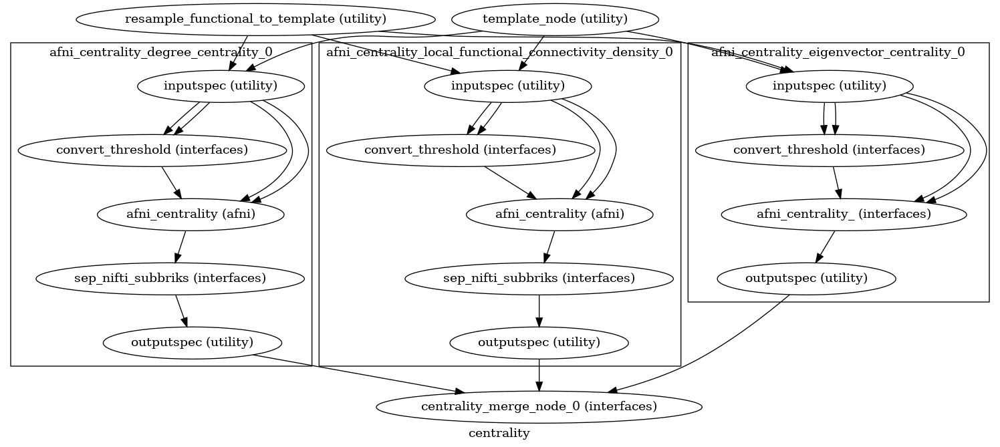
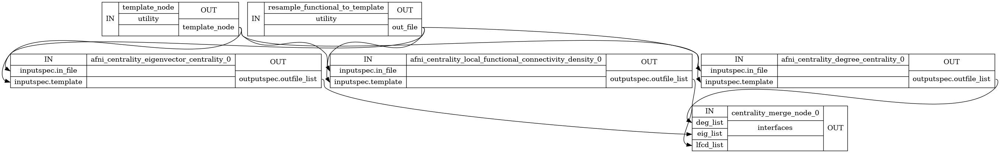

Network Centrality¶
- CPAC.network_centrality.network_centrality.create_centrality_wf(wf_name: str, method_option: str, weight_options: list[str], threshold_option: str, threshold: float, num_threads: int | None = 1, memory_gb: float | None = 1.0, base_dir: Path | str | None = None) Workflow[source]¶
Function to create the afni-based centrality workflow.
- Parameters:
wf_name (
string) – the name of the workflowmethod_option (
string) – one of [‘degree_centrality’, ‘eigenvector_centrality’, ‘local_functional_connectivity_density’]weight_options (
list) – one or more of [‘Binarized’, ‘Weighted’]threshold_option (
string) – one of [‘Significance threshold’, ‘Sparsity threshold’, ‘Correlation threshold’]threshold (
float) – the threshold value for thresholding the similarity matrixnum_threads (
integer, optional) – the number of threads to utilize for centrality computation; default=1memory_gb (
float,optional) – the amount of memory the centrality calculation will take (GB); default=1.0base_dir (
pathorstr, optional) – the base directory for the workflow; default=None
- Returns:
centrality_wf – the initialized nipype workflow for the afni centrality command
- Return type:
nipype Workflow
Notes
Workflow Inputs:
inputspec.in_file : string path to input functional data NIfTI file inputspec.template : string path to input mask template NIfTI file inputspec.threshold : float threshold value for thresholding the similarity matrix
Workflow Outputs:
outputspec.outfile_list : list of strings list of paths to output files (binarized and weighted)
- CPAC.network_centrality.pipeline.connect_centrality_workflow(workflow, c, resample_functional_to_template, template_node, template_out, merge_node, method_option, pipe_num)[source]¶
High Level Workflow Graph:
Detailed Workflow Graph:

{kind=link}
{kind=link}
NodeBlockFunction: network_centrality
- CPAC.network_centrality.pipeline.network_centrality(wf, cfg, strat_pool, pipe_num, opt=None)[source]¶
Run Network Centrality.
- exception CPAC.network_centrality.utils.MethodOptionError(method_option)[source]¶
Raised when a selected centrality method option is not supported.
- exception CPAC.network_centrality.utils.ThresholdError(threshold_option, threshold)[source]¶
Selected threshold value is not supported for selected threshold option.
- exception CPAC.network_centrality.utils.ThresholdOptionError(threshold_option, method_option=None)[source]¶
Selected threshold option is not supported for selected centrality measure.
- CPAC.network_centrality.utils.check_centrality_params(method_option, threshold_option, threshold)[source]¶
Function to check the centrality parameters.
- Parameters:
- Returns:
- CPAC.network_centrality.utils.convert_pvalue_to_r(datafile, p_value, two_tailed=False)[source]¶
Calculate correlation threshold from p_value.
- Parameters:
datafile (
string) – filepath to dataset to extract number of time pts fromp_value (
float) – significance threshold p-valuetwo_tailed (
boolean (optional); default=False) – flag to indicate whether to calculate the two-tailed t-test threshold for the returned correlation value
- Returns:
r_value – correlation threshold value
- Return type:
- CPAC.network_centrality.utils.create_merge_node(pipe_num: int) Node[source]¶
Create a Function Node to merge lists for the centrality workflow.
- Parameters:
pipe_num (
int)- Returns:
a Function Node to merge lists for the centrality workflow
- Return type:
Node
Notes
Node Inputs:
deg_list : list of strings list of paths to degree centrality outputs eig_list : list of strings list of paths to eigenvector centrality outputs lfcd_list : list of strings list of paths to local functional connectivity density outputs
Node Outputs:
degree_weighted : string path to weighted degree centrality output degree_binarized : string path to binarized degree centrality output eigen_weighted : string path to weighted eigenvector centrality output eigen_binarized : string path to binarized eigenvector centrality output lfcd_weighted : string path to weighted local functional connectivity density output lfcd_binarized : string path to binarized local functional connectivity density output
- CPAC.network_centrality.utils.merge_lists(deg_list: list[str] | None = None, eig_list: list[str] | None = None, lfcd_list: list[str] | None = None)[source]¶
Actually do the list merging.
- Parameters:
- Returns:
degree_weighted (
str) – path to weighted degree centrality outputdegree_binarized (
str) – path to binarized degree centrality outputeigen_weighted (
str) – path to weighted eigenvector centrality outputeigen_binarized (
str) – path to binarized eigenvector centrality outputlfcd_weighted (
str) – path to weighted local functional connectivity density outputlfcd_binarized (
str) – path to binarized local functional connectivity density output